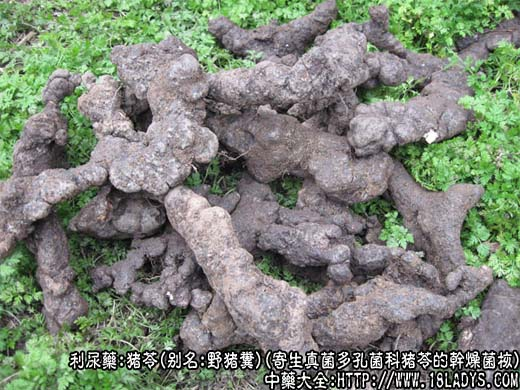
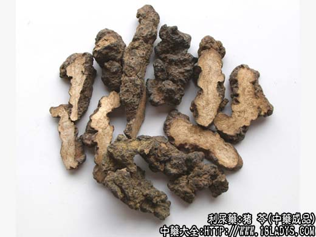
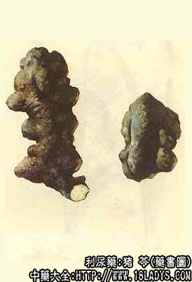

猪苓为常用中药，《神农本草经》列为中品。
别名：野猪粪、朱苓。
来源：为寄生真菌多孔菌科猪苓的干燥菌核。多为野生，多寄生于桦、柞、枫、橡等树木的根上，生长于地下30厘米左右的土壤中，夏季雨后在以上林木中若发现地面上一处先干或地面凸起处生有一茎多头蘑菇状子实体（即猪苓苗）下面即有猪苓生成。现山西安泽县等地已有人工配置。
产地：主产于陕西、山西、云南、辽宁、河北、河南等省。除华东地区及两广地区未见生产外，其它各省均有分布。
性状鉴别：猪苓呈不规则块状，大小不一，长形的略扁而弯曲，有的分歧如鲜姜有的如瘤集结。长约5～25厘米，直径约3～10厘米。表面乌黑色皱缩，凹陷及皱褶处常附有砂石，体坚而不重，轻若软木，长形者易折断。圆小者不易折断，断面白色或淡黄白色，细腻，显颗粒状花纹，气无味淡，嚼之柔韧不易碎。
以外皮乌黑光润，块大均匀，断面白者为佳。
主要成分：含麦角甾醇、无晶形多糖类，以及微量生物素。
功效与作用：利尿 。作用显著，比茯苓、木通等更强。给药后6小时内，尿量增加62%。尿中氯化物增加45%，可能是由于抑制肾小管重吸收机能而引起利尿（因其对肾小球滤过率无用明显影响）。
炮制：切片生用。
性味：甘平。
归经：入肾，膀胱经。
功能：利水渗湿。
主治：肾炎，小便不利，淋浊尿闭，水肿泄泻等症。
临床应用：1、用于治疗水肿，由于其药性比茯苓稍凉些，故适用于有水肿而稍偏于热的患者。例如肾炎浮肿而有热者，可用猪苓利尿而清热，配茯苓、泽泻、滑石等中强去湿泻热作用，方如猪苓汤。如浮肿严重，可再加车前子、牛膝。
2、用于治疗小便不利、尿痛、尿血、小腹胀满（如急性尿道炎）。可配木通、滑石等，水煎服。
使用注意：猪苓没有补性。服用过多易致利尿过甚而伤阴（有口干、烦躁等症状），因此，如平时小便量多者不宜服。又凡须利尿但不宜过于疏泄者，用茯苓而不用猪苓。
用量：6～15g。